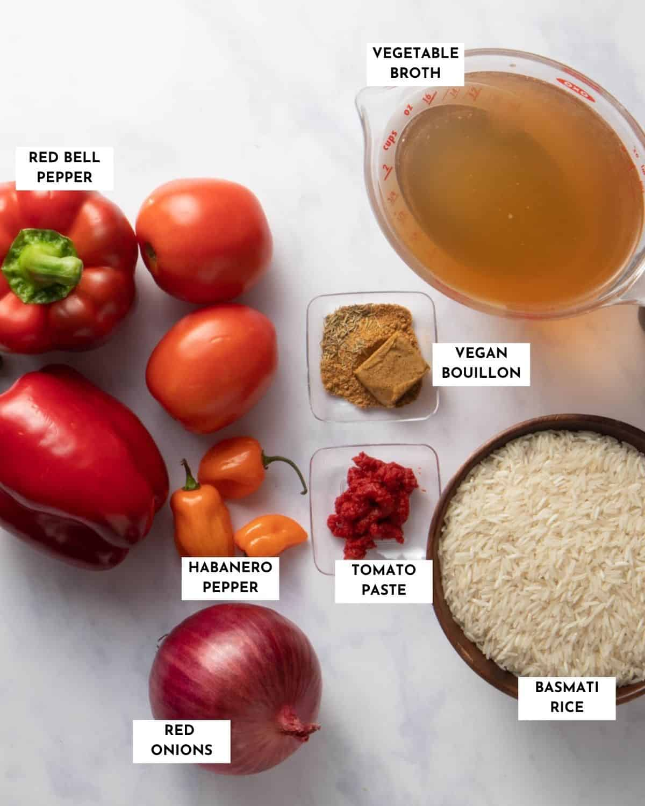

About Nigerian Jollof Rice
Nigerian Jollof Rice is a delectable and popular rice dish known for its rich flavors and vibrant colors. It's a staple at special occasions, festivals, and family gatherings.
This website is dedicated to celebrating the greatness of Nigerian Jollof Rice, showcasing its unique ingredients, sharing a step-by-step recipe, exploring the reasons why it's considered the best, and featuring mouthwatering images in the gallery section.
Featured Recipe

Nigerian Jollof Rice
Discover the authentic recipe of Nigerian Jollof Rice and learn how to prepare it at home.
Get the Recipe